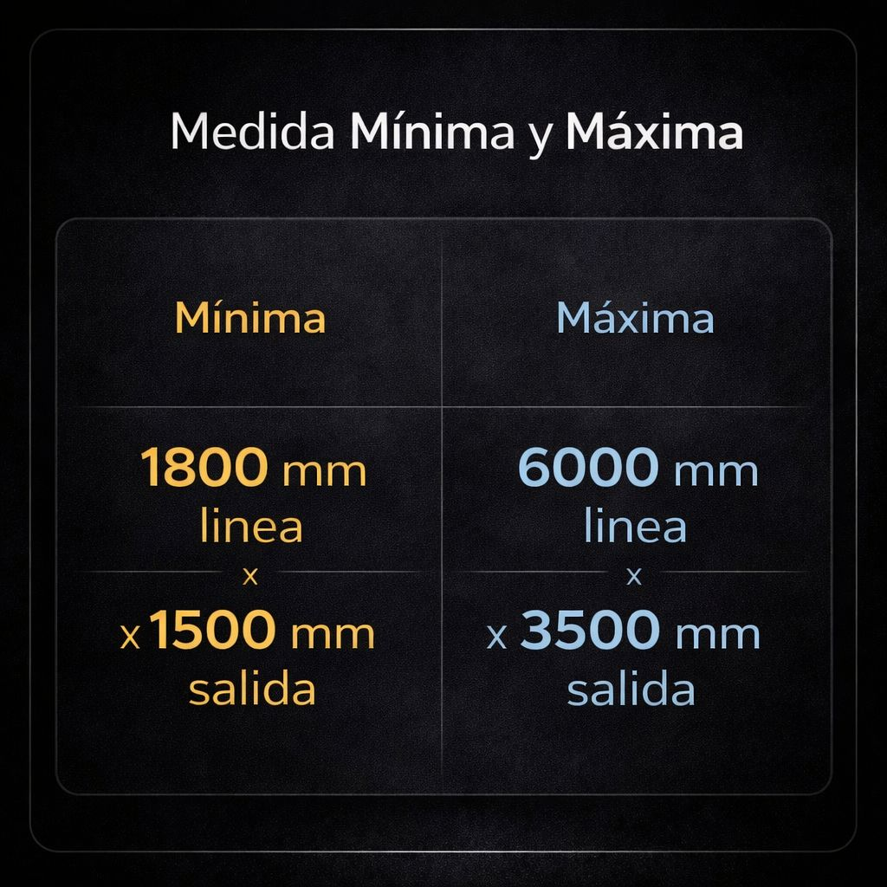
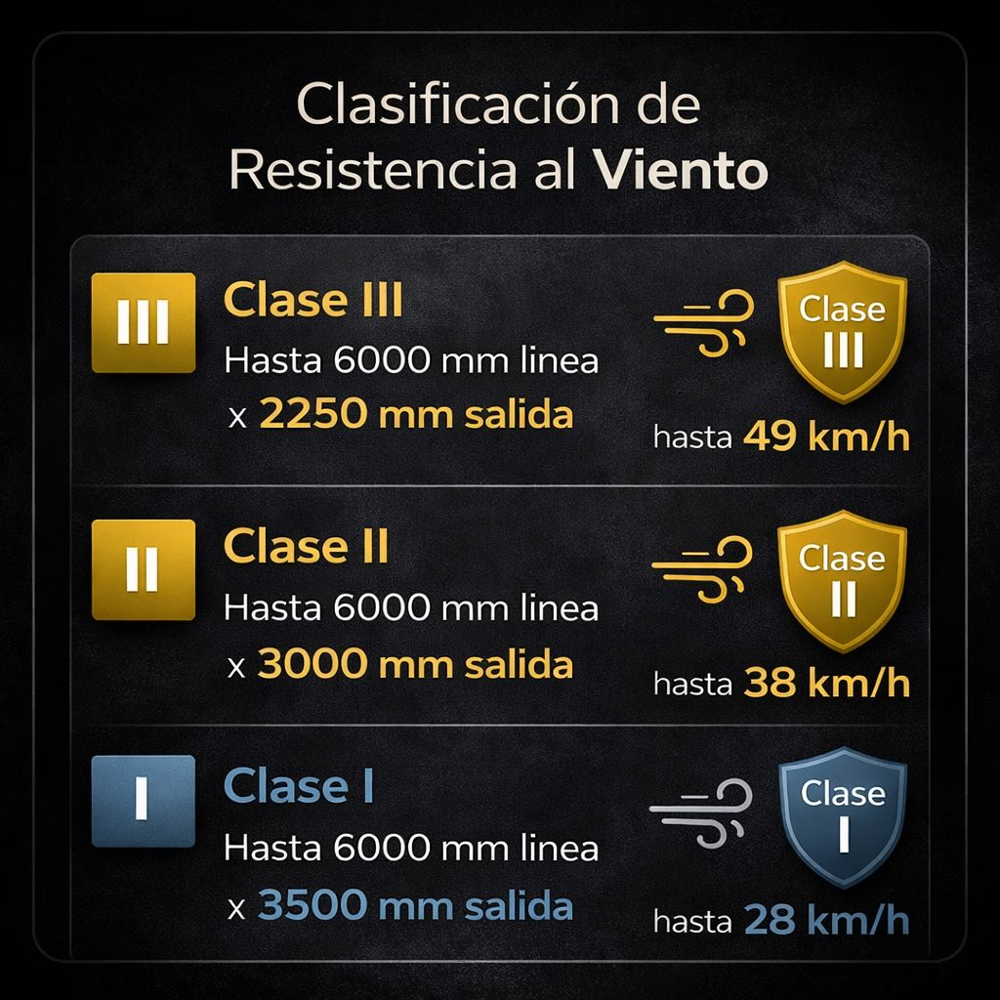

Instalación de toldos para terrazas y balcones en Girona con diseño moderno y gran estabilidad estructural.
Solicitar presupuestoEn ERB Deco realizamos instalación de toldos brazos invisibles en Girona adaptados a terrazas, balcones y espacios exteriores.
El modelo Concept ofrece una estructura robusta con brazos de gran resistencia que permiten cubrir superficies amplias manteniendo una estética moderna y elegante.
Los toldos brazos invisibles son una de las soluciones más utilizadas en Girona para proteger terrazas y balcones del sol durante los meses de verano.
Gracias a su sistema de brazos articulados permiten extender la lona sin soportes frontales, proporcionando sombra y manteniendo una estética limpia en la fachada.


Medida mínima - máxima

Clase II - Hasta 38 km/h


Manual

Motorizado

Iluminación LED

Detector viento y sol

Control remoto
Si estás valorando instalar un toldo brazos invisibles en Girona o provincia, puedes configurar tu proyecto y enviarnos tu solicitud directamente desde la web. Así podremos orientarte mejor según las medidas, acabados y opciones que mejor encajen con tu espacio.
En ERB Deco buscamos soluciones que combinen funcionalidad, protección solar y estética, con un enfoque cuidado y adaptado a cada terraza, balcón o espacio exterior.
Realizamos instalación de toldos brazos invisibles en Girona ciudad y en diferentes poblaciones de la provincia, adaptando cada proyecto a las características de cada terraza o balcón.
Trabajamos habitualmente en zonas como Figueres, Banyoles, Olot, Platja d'Aro, Palamós, Blanes, Lloret de Mar, Breda, Hostalric, Arbúcies.
Además de proyectos en Girona y provincia, también realizamos instalación de toldos en otras zonas cercanas, adaptando cada proyecto a las características del espacio exterior.
Puedes consultar información sobre instalaciones en toldo brazos invisibles en Barcelona y provincia .